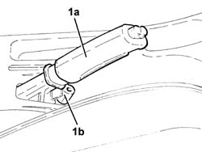
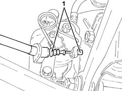
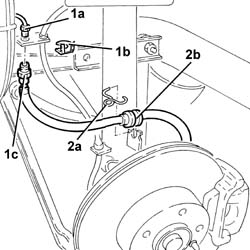
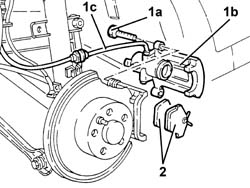
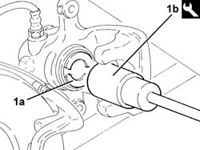

3310B36 REAR BRAKE CALLIPER - R R
- Path
- Procedures > 33 BRAKING SYSTEM > 3310 DISC BRAKES > 3310B REAR DISC BRAKES > 3310B36 REAR BRAKE CALLIPER - R R
- Kind
- repair procedure (removal / refitting; the operation number is the code)
- Applies to
- all engines; all production periods
- Interactive page
- https://sloeber94.github.io/elrnDB-aGt/en/#/125001325
Applies to: all engines; all production periods
 Removing
Removing
 Refitting
RefittingPosition the vehicle on the ramp
Remove the handbrake boot.
1. Lift up the handbrake lever (1a) and loosen the nut (1b) tensioning the handbrake cables.

Applies to: all engines; all production periods
Proceed with removal
Op. 4450B11 TYRE INFLATION VALVE CAP - REPLACE
1. Disconnect the handbrake cable from the rear brake caliper.

Applies to: all engines; all production periods
1. Undo the connector (1a), remove the stop (1b) and disconnect the rear brake flexible pipe (1c) from the rigid pipe.
2. Remove the stop (2a) and release the flexible pipe (2b) from the mounting bracket.

Applies to: all engines; all production periods
1. Undo the bolts (1a) and remove the rear brake caliper (1b) complete with flexible pipe (1c).
2. Remove the rear brake pads.

Applies to: all engines; all production periods
Refitting
Removing1. Compress the rear brake caliper piston (1a) using the tool (1b) to facilitate the fitting of the brake caliper.
 | Name | Country |
|---|---|---|
1b | Key | 1.822.108.000 |

Applies to: all engines; all production periods
Place the rear brake caliper, complete with pads and flexible pipe, back in its housing and fix it tightening the bolts to the recommended torque.
 | Fastening | Component | Ø | Value (daNm) |
|---|---|---|---|---|
- | Bolt | REAR BRAKE CALIPER | M10 | (Bracket side) 5.0 |
Refit the flexible pipe on the mounting bracket and secure it with its stop.
Fit the rear brake flexible pipe in its seating on the bracket, secure it with its stop and tighten the connector to the specified torque.
| Fastening | Component | Ø | Value (daNm) |
|---|---|---|---|---|
- | Connector | HOSE TO REAR BRAKE CALIPER | M10 | (Rigid pipe side) 1.3 ÷ 1.5 |
Connect the handbrake cable to the rear brake caliper.
Proceed with refitting
Op. 4450B11 TYRE INFLATION VALVE CAP - REPLACE.
Adjust the travel of the handbrake lever
Op. 3380A04 HANDBRAKE - CHECK TRAVEL.
Bleed the air from the hydraulic braking system
Op. 3330A14 FRONT OR REAR HYDRAULIC BRAKE SYSTEM - BLEED.
Remove the car from the ramps.
Topics linked from this page (3)
- 3330A14 FRONT OR REAR HYDRAULIC BRAKE SYSTEM - BLEED
- 3380A04 HANDBRAKE - CHECK TRAVEL
- 4450B11 TYRE INFLATION VALVE CAP - REPLACE